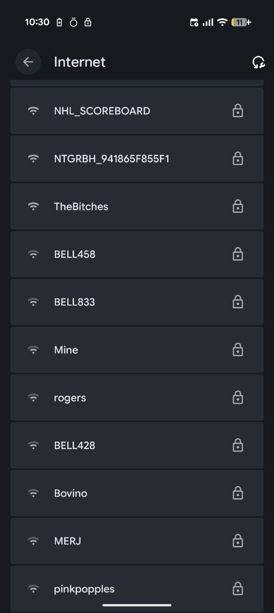
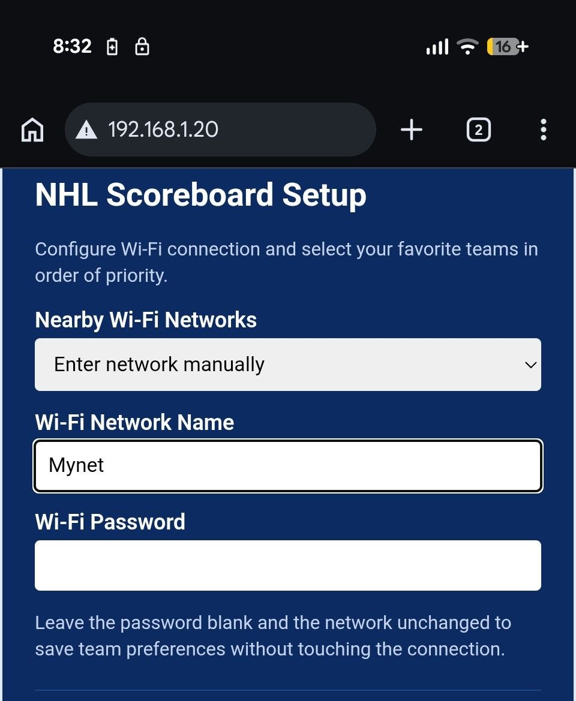
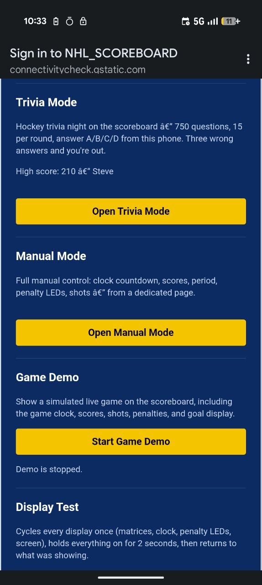
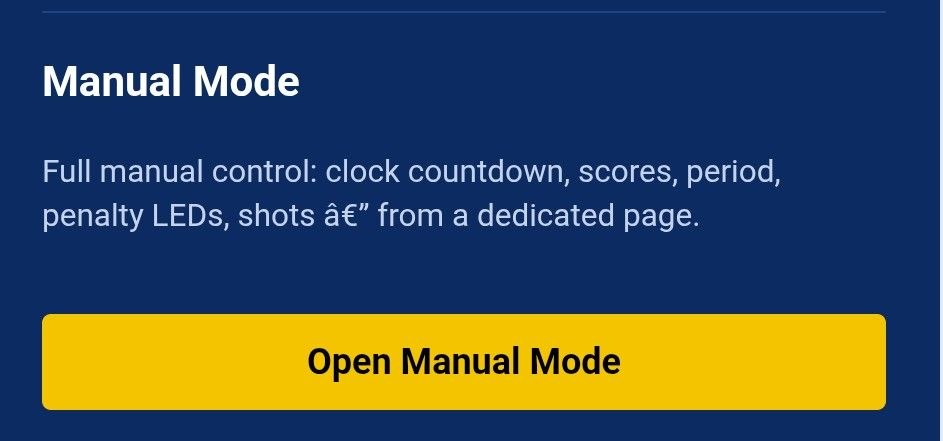

Getting started
From box to live NHL scores in about a minute.
-
Power it up
Plug the USB-C cable into the back of the board and the other end into any 5 V / 2 A source — a phone charger, a USB battery pack, a computer. The color screen shows a startup splash, then switches to the setup instructions, including the name and password of the Wi-Fi network it's broadcasting.
Waiting for the battery? Leave it plugged in for an hour or two before the first time you take it cordless. A full charge runs the board roughly 3 hours. -
Join the board's Wi-Fi
The board runs its own network so you can configure it. On your phone, open Settings → Wi-Fi and connect to
NHL_SCOREBOARD. The password is score1234 — it's also printed on the board's own screen if you'd rather not look it up.
-
Open the setup page
Your phone should pop the setup page open by itself. If it doesn't, open a browser and go to 192.168.4.1.
If the portal won't open: some phones cache the captive-portal intent and won't re-trigger it. Turn Wi-Fi off and on, reconnect toNHL_SCOREBOARD, then hit 192.168.4.1 directly. -
Pick your Wi-Fi and your teams
It's one short form. Choose your home network from the Nearby Wi-Fi Networks list (or pick Enter network manually for a hidden network) and type in the password. Then set your three Favorite Team Priorities — Priority 1 is the primary team and gets the color screen; if two of your teams are on at once, the second one takes the LED matrices.

Two more things worth setting while you're here:
- Display Time Zone — used for game times, countdowns and the idle clock. Get this right and your board's times match your wall clock.
- Enable audio output — the master switch for the goal horn and the period buzzer. It's on by default; if the board is silent, this is the first place to look.
- Goal Horn — pick the sound that fires when your team scores: the classic horn or the Edmonton, Calgary, Ottawa, or Boston arena horn. Preview plays the highlighted one without saving; Save & Connect applies your choice.
Then hit Save & Connect. The board reboots (about 30 seconds) and joins your home Wi-Fi.
-
Wait for the first sync
While the board catches up, the matrices show an idle clock and the color screen shows a setup message. Once it has the schedule, it settles into standby: upcoming games with countdowns, standings, and league headlines, rotating every few seconds.
When one of your teams goes live, the board switches itself over — usually within about a minute of puck drop. When the game ends, the final score stays put for two minutes before it heads back to standby.
The setup page, in full
Everything the board can be told to do, all in one place. You can come back to it any time — see the note below on how to reach it once the board is on your own Wi-Fi.
- Nearby Wi-Fi NetworksScan and pick your network, or enter it manually if it isn't listed
- Wi-Fi Network Name / PasswordThe home network the board joins
- Favorite Team PrioritiesPriority 1 (primary), Priority 2, Priority 3 — up to three teams, changeable whenever you like
- Display Time ZoneDrives game times, countdowns and the idle clock
- Display current timeShow the clock on the score boards when no game is live
- Enable audio outputMaster switch for the goal horn and the period buzzer
- Goal HornPick the horn for your team's goals — classic, Edmonton, Calgary, Ottawa, or Boston; preview before you save
- Hibernate between gamesDisplays go dark and the board sleeps between 5-minute game checks, then wakes for puck drop. Power-cycle the board to use the portal while it's hibernating
- Board VersionBoard V0.1, V1.0, or V1.1 (battery sense). A change takes effect after a reboot
- Trivia ModeRun a trivia round
- Manual ModeDrive the board yourself
- DiagnosticsDisplay test, audio test, and the demo game
- Firmware UpdateCheck for an update, or upload a firmware file by hand
Modes
Two extra modes, both opened from the setup page.
Trivia Mode
15 questions, 10 seconds each. Answer fast for up to 100 points a question — and it gets harder as you go, ramping 5 easy, 5 medium, 5 hard. Three wrong answers and you're benched. The board keeps the high score, so the same person doesn't have to keep winning.
There's also Multiplayer Night: up to 15 players join from their own phones by a shared link, everyone plays the same questions, and the fastest correct answer scores the most. Perfect for a living-room final.

Manual Mode
Full manual control of the display — for a kid's game, a charity match, a scrimmage, or any sport where you're calling the score yourself. You get the clock, the period length, the period, and for both HOME and GUEST: score, shots, and two penalty indicators each. There's a Start button for the game and a period-length setting, so the next period reloads at the length you choose.

Troubleshooting
- No sound? Check the settings page and make sure sound is enabled in the settings.
- Setup portal won't open. Some phones cache the captive-portal intent. After connecting to
NHL_SCOREBOARD, open a browser and go to 192.168.4.1 directly. - No live game showing up. Check that you've picked teams in the setup portal (Priority 1, 2, 3) and that the next game is on the schedule. The board checks the schedule once a minute, so it can take up to 60 seconds to notice a game has started.
- The board went dark. Hibernate between games is on by default — the displays sleep between 5-minute checks and wake for puck drop. Power-cycle the board to bring the setup page back.
- Times look wrong. The Display Time Zone setting drives game times, countdowns and the idle clock. Set it in the setup page.
- Score hasn't changed in a while. The board pulls a fresh feed every 5 seconds while a game is live; if it's been flat for 5+ minutes and the game is supposed to be going, you might be looking at an intermission. Check the period matrix — it's blank or showing a dash during intermissions.